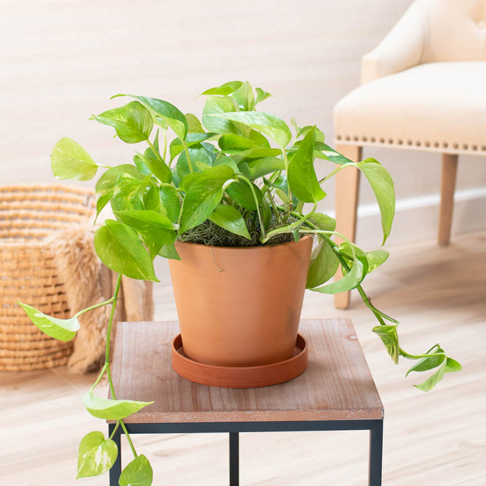
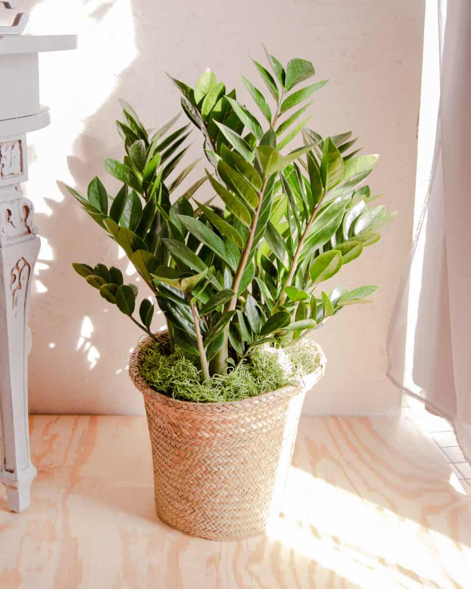
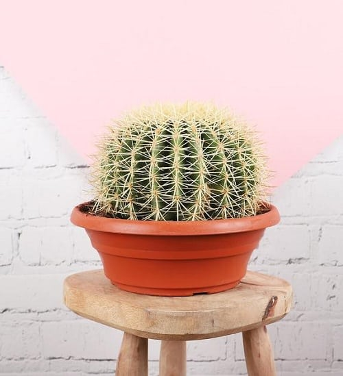
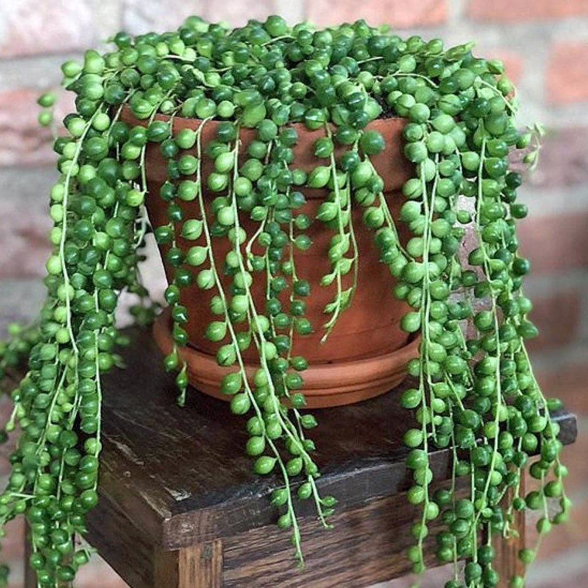

Casual Parents
So you're the casual parent. Your plants are lucky if they get half of the suggested waterings. The good news is that there are plants that will thrive in these conditions. First of all, water haters, over watering or under watering doesn't actually mean the amount of water you give your plants per watering, it's about the frequency. Every time you water your plants, you should be fully saturating the soil, whether it's a pothos or a cactus. The root system tries to grow to fill the entire pot for a reason. This is because every root should have access to water, not just in one area. Water your plants until water comes out of the drainage hole at the bottom of the pot. If your pot doesn't have a drainage hole, either drill one or get a new pot. I reccomend that you get a plant app that reminds you like Planta so that remembering to water your plants won't be an issue. heres a secret: your plants can go longer without water than planta thinks, but it's a good base to go off of. Ok, plant buying time. The following plants either love to dry out or are tolerant of any kind of care. Happy planting!
1.The Pothos
The pothos. One of the most resilient and reliable plants on Earth. I recommend pothos to any type of plant parent. They are very tolerant to droughts and in my experience, even prefer to dry out. They are fast growers that let you know whether or not they are suffering from a lack of water by showing crispy leaf tips and drooping when thirsty. There are many different varieties as well! For beginners I recommend the golden pothos, neon pothos, satin pothos, and cebu blue pothos. Marble queen is also a safe choice, as long as she gets lots of light.

2.The Snake Plant
Snake plants and every other type of Sansiveria are very drought-resistent plants. I have a large snake plant that I water around four times a year. These plants thrive on neglect. Smaller snake plants with less soil will obviously need more water than my giant one, but not by much. They come in many beautiful varieties and sizes, you just have to find your favorite!

3. The ZZ Plant
The ZZ, or Zamioculcas Zamiifolia, is a very beautiful and resilient plant. It doesn't like too much water and it is tolerant of very low light. Stick these little (or big!) guys in a back corner and forget about them! Their dark green leaves and attractive growth pattern make a beautiful low-maintenance addition to any space.

4. The Cactus
Cactus is a very broad term! The good news is that all types of cactus will thrive under your style of care. Cactus will survive for a very long time without water. Many produce beautiful blooms as long as they are given ample sunlight. So go crazy! Get 1 or 10 cactus! It won't be much work and they can be small or large, smooth or sharp, basic or exotic, whatever you want!

5. The String of Pearls
String of Pearls or Dolphins, fish hooks, hearts, or turtles all despise water. Overwatering these plants can easily kill them, but they let you know when they need water. Only water these guys when the pearls start to deflate. Give them lots of sunlight and boom! Watch these quick little guys grow like crazy! These are very trendy plants and they are a great conversation piece in your home for anyone who knows anything about plants!
